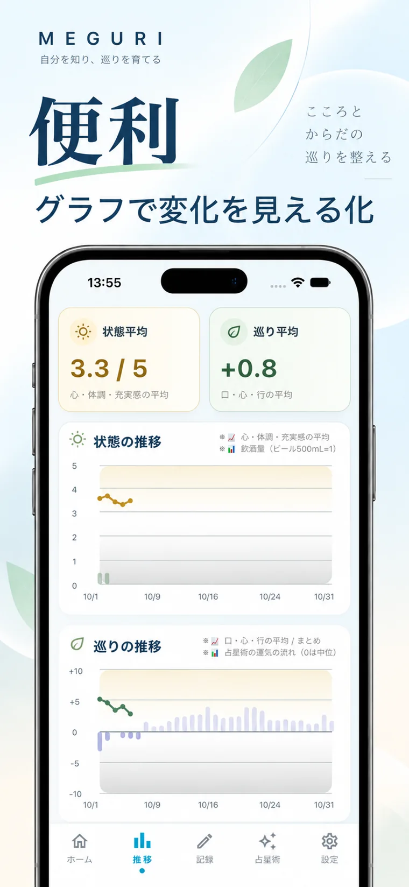
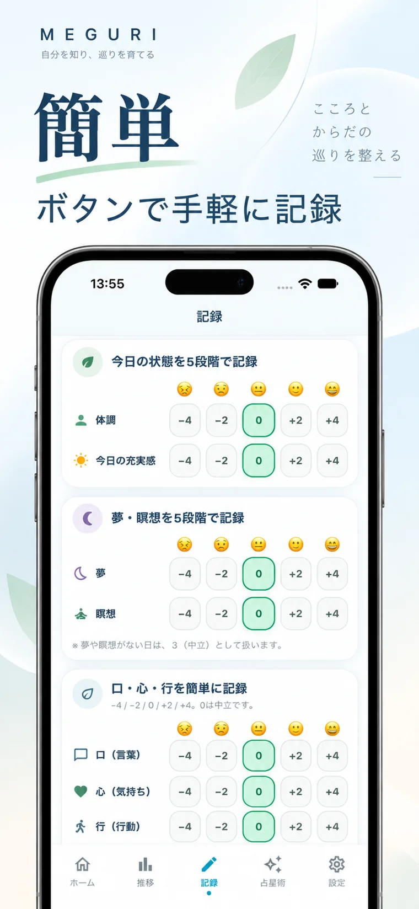
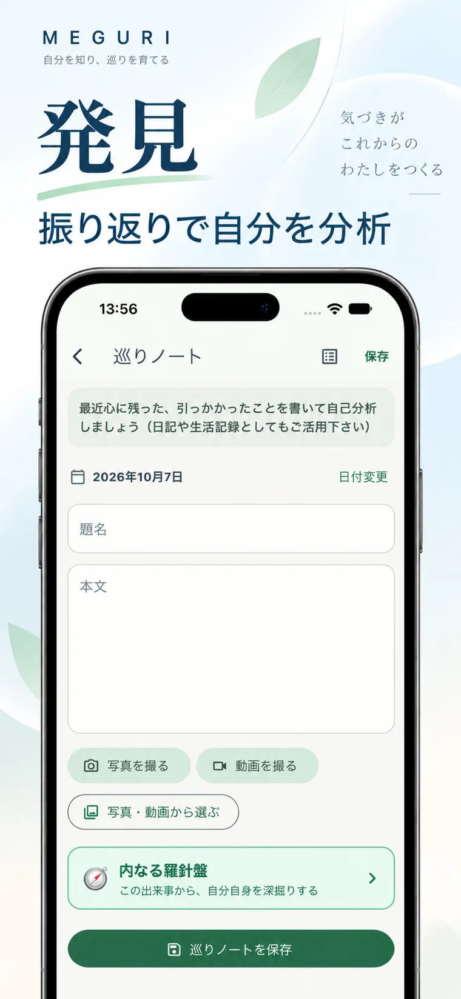
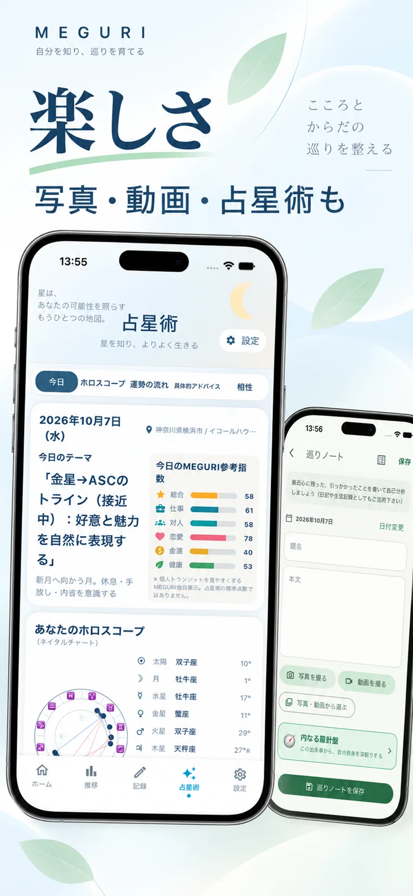
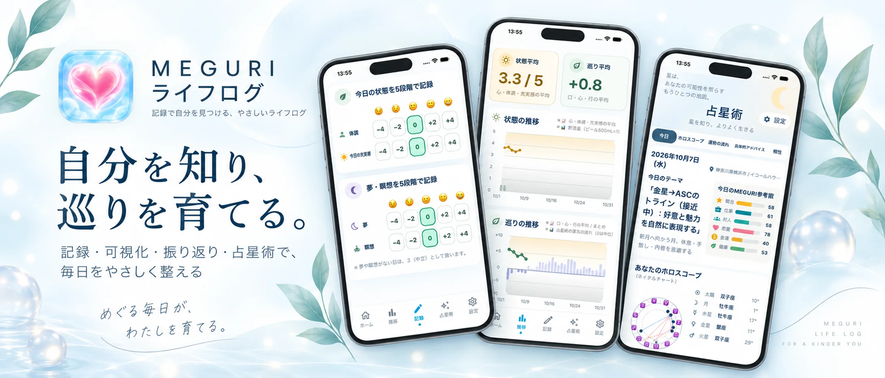

記録する
心と体、口・心・行、夢や日々の出来事を残す。
自分を知る、不思議なライフログ
記録があなたの内面を育てる。
それが、MEGURIのライフログ。
気持ち、体調、食事、行動、心に残った出来事。
何気ない毎日を残していくと、まだ知らなかった自分が少しずつ見えてくる。
30日間無料体験 ／ その後は500円の買い切り ／ 広告なし


自分のことは、
誰かに教わっても
わかりません。
腹に落ちた時、
はじめてわかる。
「今日は、なぜあんな気持ちになったんだろう？」
「どうして、同じことを繰り返すんだろう？」
自分を知る答えは、いつも誰かが教えてくれるわけではありません。過去の自分を見返したとき、ふっと気づくことがあります。
MEGURIは、その瞬間のための記録です。
毎日を手軽に記録し、変化を見て、気になることを自分なりに深掘りする。AIに答えを決めてもらうのではなく、あなた自身が発見することを大切にしています。
SMALL STEPS, DEEP DISCOVERY
使い方はシンプル。記録を重ねるほど、振り返るための材料が増えていきます。
心と体、口・心・行、夢や日々の出来事を残す。
カレンダーとグラフで、変化や積み重ねを眺める。
自分で選んだ条件から、生活の傾向を探してみる。
内なる羅針盤で、自分がどうありたいかを考える。
FOUR WAYS TO KNOW YOURSELF
あれこれアプリを行き来しなくても、毎日の暮らしと心の動きをひとつの場所に。
心、体調、充実感、食事、瞑想、運動、飲酒量など。複雑な入力を毎回する必要はありません。5段階のボタンを押し、その日の自分を少しずつ残せます。
書きたいときには自由ノートに文章を。写真や動画も、その日の記憶として残せます。
「最近調子がいいのはなぜ？」「飲酒が多かった週はどうだった？」。一日の印象だけでなく、少し長い時間の流れを見てみましょう。
状態の推移と、口・心・行の記録をグラフで確認。占星術の流れも参考表示でき、過去の日々を違った角度から眺められます。

MEGURI発見では、「食事が控えめだった日」「よく眠れた日」など、気になる条件を自分で設定して記録の傾向を探せます。
内なる羅針盤では、心に引っかかった出来事を、事実・気持ち・動機・結果の順に整理。最後に問いかけるのは、相手をどう変えるかではなく、「自分はどうありたいか」です。

気になる本を見つけたら写真を一枚。旅先で心に残った景色は動画で。日記や生活記録を、自分らしい形で残せます。
占星術のチャートや、記録を続けることで出会える妖精のことばなど、振り返る時間がちょっと楽しくなる要素も。
INNER COMPASS
人間関係でモヤモヤしたとき、後悔したとき、うれしかったとき。その出来事を自分なりに整理してみる。
MEGURIの「内なる羅針盤」は、自分を責めるためでも、誰かを裁くためでもありません。次にどうありたいかを考えるための時間です。
ONE PLACE FOR YOUR DAILY LIFE
記録、グラフ、気づき、思い出。毎日の自分に必要なものを、まとめて。

掲載画像は実際のアプリをもとにしたプロモーション画像です。表示は端末やバージョンにより異なります。
FOR YOU
特別な目標がなくても大丈夫。ちょっと自分のことを知りたいと思ったら、そこから始められます。
SIMPLE PRICING
MEGURIの価値は、使って自分の記録を振り返ることでわかってくるもの。まずは無理なく試してください。気に入ったら一度の購入で永久利用。月額料金も広告もありません。
App StoreでMEGURIを見る ↗買い切り・永久利用
サブスクリプションなし
FAQ
はい。最初の30日間は無料でお試しいただけます。その後、継続して利用する場合は500円の買い切り購入です。サブスクリプションではありません。
心・体調・充実感、食事・運動・瞑想・夢・飲酒量などの生活の状態や行動、自由ノートへの文章・写真・動画を記録できます。
いいえ。MEGURIは答えを一方的に決めるのではなく、自分自身の記録を手がかりに振り返るためのアプリです。医療的な診断や治療を目的とするものではありません。占星術の情報も参考としてご利用ください。
日々の記録は基本的に端末内で扱います。iCloud Driveへのバックアップと復元は、アプリ内でユーザーが手動で実行する方式です。機種変更前には忘れずにバックアップしてください。
永久利用は非消耗型のアプリ内購入です。購入したApple Accountで利用する場合、アプリの購入復元機能から購入状態を復元できます。
はい。このページ下部のサポート窓口へメールでお問い合わせください。端末の種類、iOSのバージョン、発生した状況などを添えていただくと確認しやすくなります。パスワードなどの機密情報は送らないでください。
日々の記録データは基本的にお使いの端末内で扱います。iCloud Driveへのバックアップ・復元は手動操作です。アプリ内購入にはAppleの課金機能および購入管理サービス（RevenueCat）を使用します。広告は表示しません。
購入情報は、AppleのApp Storeプライバシー表示もご参照ください。MEGURIは医療診断や治療を提供するアプリではありません。